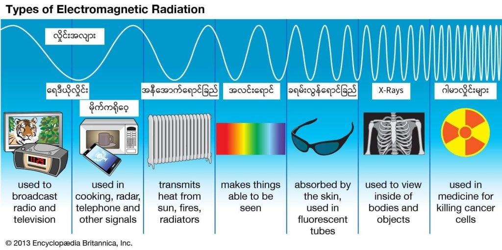

အာကာသ သိပ္ပံ ပညာရှင်တွေကတော့ စကြာဝဠာ ရဲ့ အရောင်ဟာ အမည်းရောင် မဟုတ်ပါဘူးတဲ့။
ယူကေ နိုင်ငံ လစ်ဗာပူး ဂျွန်မိုး တက္ကသိုလ်က အာကာသ ရူပဗေဒ သုတေသန ဌာန (Liverpool John Moores University Astrophysics Research Institute) က ပါမောက္ခ အီဗန် ဘော်လ်ဒရီ Prof. Ivan Baldry က “အမည်း ဆိုတာက အရောင် မဟုတ်ဘူးလေ” လို့ ပြောပါတယ်။
“အမည်းရောင် ဆိုတာက အလင်းရောင် မရှိလို့ ဖြစ်လာတာပါ။ ဒါပေမယ့် အရောင် ဆိုတာက မျက်စေ့နဲ့ မြင်ရတဲ့ အလင်းရောင်ကြောင့် ဖြစ်လာရတာလေ။ စကြာဝဠာ ကြီးထဲမှာ အလင်းရောင် ထုတ်ပေးနိုင်တဲ့ ကြယ်တွေ ဂလက်ဆီ တွေမှ အများကြီးပဲဟာ” လို့ သူက ပြောပါတယ်။
ညဖက် ကောင်းကင်ကို မော့ကြည့်လိုက်ရင် ဂလက်ဆီပေါင်း သိန်း၊ သန်း၊ ကဋေ မှာ ရှိနေတဲ့ ကြယ်ပေါင်း များစွာကနေ ထုလွှတ်လိုက်တဲ့ အလင်းရောင်တွေကို တွေ့ရမှာ ဖြစ်ပါတယ်။ (အားလုံး မြင်ဖို့ ဆိုရင်တော့ အားကောင်းတဲ့ နက္ခတ်ကြည့် မှန်ပြောင်း လိုပါလိမ့်မယ်)။
၂၀၀၂ ခုနှစ်မှာ ဘော်လ်ဒရီနဲ့ အတူ ဩစတြေးလျ နိုင်ငံ ဆွိုင်းဘန်း တက္ကသိုလ် အာကာသ ရူပဗေဒ ဌာန (Centre for Astrophysics and Supercomputing at the Swinburne University of Technology in Australia) က ကားလ် ဂလေ့ဇ်ဘရုက် (Karl Glazebrook) တို့ဟာ ထောင်ပေါင်းများစွာသော ဂလက်ဆီတွေကနေ ဖမ်းယူရရှိတဲ့ အလင်းရောင်ကို တိုင်းတာပြီး တွေ့ရှိချက်တွေကို သုတေသန ဂျာနယ် တစ်စောင်မှာ တင်ပြခဲ့ပါတယ်။ The Astrophysical Journal မှာ တင်ပြတဲ့ သုတေသန စာတမ်းမှာ ဖမ်းယူရရှိတဲ့ အလင်းရောင်တွေကို စုပေါင်းပြီး အရောင်လှိုင်းခွင် တစ်ခုထဲအဖြစ် ပေါင်းစပ် ပုံဖော်ခဲ့ကြတာပါ။
ဒီသုတေသန ရလဒ်ကနေပြီး သိပ္ပံ ပညာရှင်တွေဟာ စကြာဝဠာရဲ့ အရောင်ကို တွက်ယူခဲ့ ကြပါတယ်။
အာကာသရဲ့ရောင်စဉ်ကြယ်တွေ ဂလက်ဆီတွေ အားလုံးဟာ လျပ်စစ်သံလိုက် လှိုင်းတွေ ထုတ်လွှင့်ပေးကြပါတယ်။ ဒီ ထွက်လာတဲ့ အလှိုင်းတွေကို လှိုင်းအလျား အတိုအရှည်ပေါ် မူတည်ပြီး အမျိုးအစား ခွဲခြားထားပါတယ်။ လှိုင်းအလျား အတိုဆုံး ကနေ လှိုင်းအလျား အရှည်ဆုံး အထိ အစဉ် အတိုင်း ဆိုရင်
- ဂမ်မာ လှိုင်း (gamma-rays)
- ဓါတ်မှန်ရောင်ခြည်လှိုင်း (X-Rays)
- ခရမ်းလွန် ရောင်ခြည်လှိုင်း (Ultraviolet light)
- အလင်းရောင်စဉ် (visible light)
- အနီအောက် ရောင်ခြည် (infrared radiation)
- မိုက်ကရိုဝေ့ လှိုင်းများ (microwaves)
- ရေဒီယို လှိုင်းများ (radio waves)

ကြယ် (သို့) ဂလက်ဆီ တစ်ခုက ထွက်တဲ့ မြင်ရတဲ့ အလင်း ရောင်စဉ်တွေကို တိုင်းတာရာ မှာတော့ ထွက်လာတဲ့ အရောင် တစ်ခုခြင်းစီက ဘယ်လောက်ထိ လင်းလဲ ဆိုတာကို ပါ တိုင်းတာရပါတယ်။ ဥပမာ အနီရောင်က ဘယ်လောက် လင်းအားများလဲ၊ အပြာရောင်က ဘယ်လောက် လင်းအား များလဲ စသဖြင့် တစ်ခုချင်းစီကို တိုင်းတာပြီး ပျမ်းမျှ အရောင်ကို ပြန်ပြီး တွက်ယူ ရတာပါ။
၂၀၀၂ ခုနှစ်မှာ ဩစတြေးလျ နိုင်ငံက ပြုလုပ်ခဲ့တဲ့ ဂလက်ဆီ ရောင်စဉ် အနီပြောင်း တိုင်းတာရေး သုတေသန (2dF Galaxy Redshift Survey) ကနေပြီး ဂလက်ဆီပေါင်း ၂၀၀,၀၀၀ ကနေ ထွက်တဲ့ အလင်းရောင်စဉ်တွေကို အသေးစိတ် တိုင်းတာ ခဲ့ပါတယ်။ အဲ့သည် ရလာတဲ့ ရောင်စဉ်တွေကို စုပေါင်းပြီးတော့ အာကာသ စကြာဝဠာကြီးရဲ့ အရောင်ကို ပြန်ပြီး တွက်ချက် ယူနိုင်ခဲ့ကြပါတယ်။
ဒီ အာကာသ စကြာဝဠာရဲ့ အရောင်ဟာ စကြာဝဠာ တစ်ခုလုံးက ကြယ်တွေ ဂလက်ဆီတွေ ဆီကနေ ထွက်လာတဲ့ အလင်း စွမ်းအင် အားလုံးပေါင်းကို ကိုယ်စားပြုပါတယ် လို့ ဒီသုတေသနမှာ ပါဝင်တဲ့ ပညာရှင်တွေက ရှင်းပြ ကြပါတယ်။
လူတွေဟာ တစ်ယောက်နဲ့ တစ်ယောက် အရောင်ကို မြင်ပုံခြင်း နဲနဲလေး ကွဲကြပါတယ်။ ဒါ့အပြင် အရောင်ကို မြင်ရတာဟာ ပတ်ဝန်းကျင်က အခြားအရောင်တွေ ကြောင့်လဲ အပြောင်းအလဲ ရှိနိုင်ပါတယ်။ ဒါ့ကြောင့် ဒီ တိုင်းတာရရှိတဲ့ အရောင်တွေကို အပြည်ပြည်ဆိုင်ရာ အလင်းရောင် ကော်မစ်ရှင် ကနေ သတ်မှတ်ထားတဲ့ စံ အရောင်တွေ အဖြစ် အရင် ပြောင်းပြီးမှ တွက်ချက် ထားတာ ဖြစ်ပါတယ်။
ဒီလို ပြောင်းလဲပြီး တွက်ချက်ကြည့် လိုက်တဲ့အခါ စကြာဝဠာ ကြီးရဲ့ အရောင်ဟာ အဖြူရောင် နောက်ခံမှာ ဝါဖန့်ဖန့်နဲ့ နို့နှစ်ရောင် (beige color) အရောင် ရှိတယ် ဆိုတာ တွေ့ရှိရပါတယ်။ (အောက်ပုံကြည့်ပါ)။ ဒီ အရောင်ကို ပညာရှင်တွေက နာမည် ပေးထားပါတယ်။ အာကာသ နို့နှစ်ရောင် (Cosmic Latte) တဲ့ဗျား။
အနီပြောင်းခြင်း (Red Shift) ကိုပြုပြင်ခြင်း
အာကာသ ထဲက ဂလက်ဆီ အများစုဟာ ကျွန်တော်တို့ ကမ္ဘာမြေကနေ ဝေးရာကို အလွန်လျှင်မြန်တဲ့ အရှိန်နဲ့ ရွှေးလျား နေ ကြပါတယ်။ ဒီလို ရွှေ့သွားတဲ့ အတွက် သူတို့ဆီက လာတဲ့ အလင်းကို ကျွန်တော်တို့ မြင်ရတဲ့အခါ အနီရောင် နည်းနည်း သမ်းနေပါတယ်။ ဒါကို သိပ္ပံ ပညာရှင်တွေက အနီပြောင်းခြင်း (Red Shift) လို့ အမည်ပေးထားပါတယ်။အခု တွက်ချက်တဲ့ အခါမှာတော့ မတွက်မီ ဒီ အနီပြောင်းတာကို ပြန်ပြီး မူလ ဂလက်ဆီကနေ ထွက်လာတဲ့ မူရင်း အလင်းရောင် ဖြစ်အောင် ပြန်ပြောင်းယူရပါတယ်။ ဒါကို ဂလက်ဆီ ၂ သိန်းကျော်လုံး အတွက် တစ်ခုချင်း ပြန်တွက် ယူရတာပါ။ အဲ့သည်လို မပြောင်းခဲ့ရင် တကယ့် အရောင်မှန် မရတော့ပဲ ဂလက်ဆီတွေ ပြေးထွက်နေလို့ နီကျင့်ကျင့် အရောင် ပြောင်းနေတဲ့ အရောင် ထွက်လာမှာ မို့ပါ။
ဒီလို အနီပြောင်းတဲ့ အရောင်ကို ပြန်ပြန်လိုက်တော့ ဘာဖြစ်လာလဲ ဆိုတော့ ဂလက်ဆီ တွေရဲ့ မူရင်း အရောင်ကို ပြန်ရလာတာပဲ ဖြစ်ပါတယ်။ ဒါ့ကြောင့် အခု တွက်လို့ ရတဲ့ အရောင်ဟာ ဂလက်ဆီတွေ တစ်ခုနဲ့ တစ်ခု ဝေးရာကို ပြေးထွက်နေ ကြလို့ ရလာတဲ့ အရောင် မဟုတ်ပဲ ဂလက်ဆီ တွေကနေ မူရင်းထွက်လာတဲ့ အရောင်ပဲ ဖြစ်ပါတယ်။
ဒီ အာကာသ နို့နှစ်ရောင်ကို အလွယ်တကူ လူနားလည်အောင် ရှင်းပြမယ် ဆိုရင် စကြာဝဠာကြီးကို အပြင်ဖက်ကနေ ထွက်ပြီး ကြည့်ခဲ့မယ်ဆို မြင်ရမယ့် အရောင် ဖြစ်ပါတယ် လို့ ပညာရှင်တွေက ရှင်းပြကြပါတယ်။
Reference: What color is the universe?